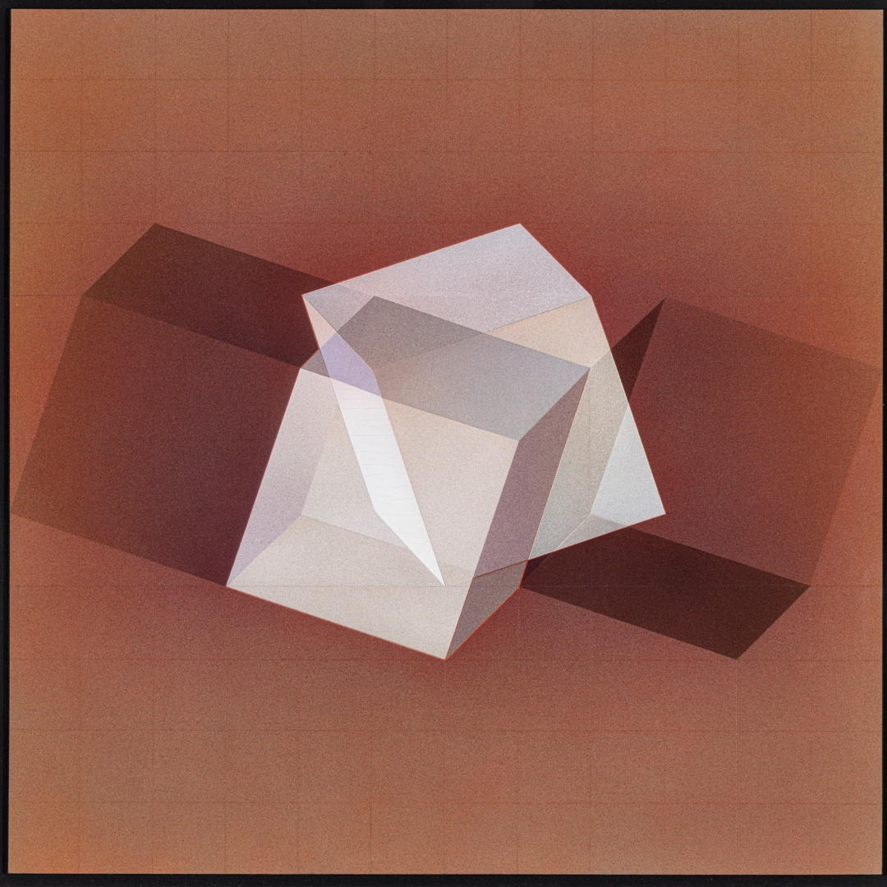

Guido Zanoletti
Biografia
Guido Zanoletti (1933-2014) è stato un artista genovese, noto per la sua attività di disegnatore, scenografo, poeta e docente presso l’Accademia Ligustica di Belle Arti di Genova. La sua arte è influenzata dalle correnti che vanno dall’Impressionismo al Costruttivismo fino alla ricerca cinetica, con un focus sulla meccanica dei sogni e una geometria onirica che stimola la riflessione senza creare ansia.


Senza titolo (1 e 2)
Queste opere di Guido Zanoletti si presentano come uno studio sulla tridimensionalità e sulla relazione tra spazio, luce e forma. L’artista utilizza una combinazione di geometrie rigorose (principalmente cubi e parallelepipedi) per costruire un ambiente che appare sia concreto che illusorio. Il gioco tra pieni e vuoti suggerisce un’interazione tra solidità e assenza, tra costruzione e smaterializzazione. I cubi e le superfici piatte creano un equilibrio dinamico, in cui ogni elemento pone alla percezione di profondità e movimento, senza che l’immagine risulti caotica. L’uso del quadrato e del cubo non è pittorico, ma nasce da un’indagine sul volume e sulla percezione della forma nello spazio. La prospettiva è studiata con grande precisione: lo spazio sembra arretrare gradualmente. La parte cromatica dell’opera è dominata da sfumature fredde di grigio, azzurro e cobalto. Il colore viene modulato con estrema precisione, evitando contrasti netti. L’illuminazione è estremamente importante: le superfici bianche dei cubi sembrano riflettere una luce diffusa, le ombre sono anch’esse sfumate, la luce non proviene da una fonte diretta e netta. Quest’opera potrebbe essere interpretata come una rappresentazione di un paesaggio mentale, un luogo astratto. L’assenza di figure umane richiama la solitudine silenziosa di Hopper. I riferimenti al cinema possono essere percepiti nella struttura visiva dell’opera: un’immagine costruita come un set cinematografico, dove il vuoto e l’architettura diventano strumenti di narrazione. In questo senso, l’opera è un pezzo di un racconto più ampio, in cui lo spettatore è chiamato a immaginare cosa accade fuori dal quadro.